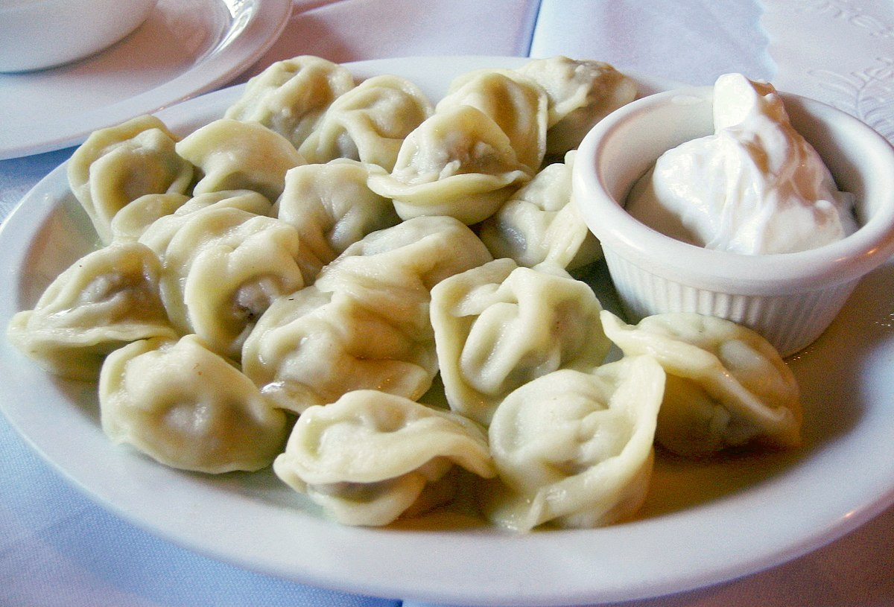

Russian Pelmeni

Description
Pelmeni are Russian meat-filled dumplings. Making them is a favorite family pastime during the long winter months.
These dumplings are a common convenience food. Large batches can be frozen and quickly boiled or fried on demand.
We usually double this recipe in our house and fold about 200 pieces. Pelmeni are usually served with sour cream or vinegar.
Ingredients
- 18 ounces ground beef
- 1 small onion, chopped
- 1 ½ tablespoons ice-cold water
- 1 tablespoon coarse salt
- reshly ground pepper to taste
Steps
- Make dough: Combine egg, oil, and salt in a liquid measuring cup; add enough warm water to fill to 1 cup
- Pour into a large bowl and knead in 3 cups flour until smooth and elastic. Cover with a dish towel and let dough rest for 30 minutes.
- Meanwhile, make filling: Combine ground beef, onion, water, salt, and pepper in a medium bowl; mix thoroughly by hand or using a fork. Set aside.